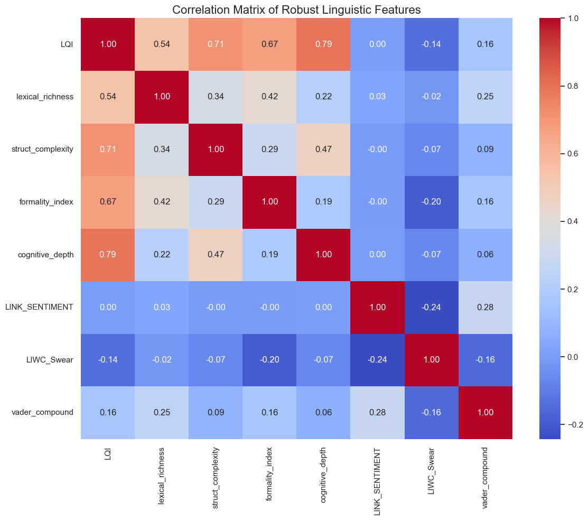

TLDR; Is the internet really getting "dumber", or is it just getting more diverse? We analyzed millions of Reddit posts using 300-dimensional embeddings and linguistic algorithms to map the "Digital Dialects" of the internet. We found that while some communities thrive on simplicity, high-complexity language is alive and well—often in the most unexpected places.
It's not the first time I've seen such sentiments around here. Actually,
I find it super interesting, as such discussions about "linguistic quality" are not recent.
In fact you can find them pretty much at any point since we've begun to standardise our languages.
Still, with the rise of social media and instant messaging, such perceptions have been on the rise
and it could be interesting to know if they are based on actual data. And
if so, what motivates the difference of language quality between users.
[Optional: We can formalize Research Questions (RQ1, RQ2) here if we want a more academic tone, or leave it narrative.]
1. Dataset
Hyperlinks
Our primary dataset consists of the "Subreddit Hyperlinks Network." This is a massive collection
of posts where one subreddit links to another. It provides us with the raw text body of the posts,
timestamps, and sentiment labels, allowing us to analyze not just what is said, but the context in which it is said.
Embeddings
Introduction
Along with the initial subreddit hyperlinks dataset, we used another dataset:
the embedding vectors of subreddits (available on the SNAP website).
These embeddings are high-dimensional vectors (in our case, 300 dimensions).
They are designed to represent similarities between data points in a complex space.
Specifically, each of the ~50,000 subreddits is assigned a 300-dimensional vector.
These vectors indicate similarity based on user behavior: if many users post in
the same group of subreddits, those subreddits will be closer to each other in this
300-dimensional space.
These embeddings are very useful for our research on linguistic quality and our goal to determine
'who speaks the best.' They allow us to identify clusters of subreddits where users share similar
interests, effectively grouping subreddits into distinct communities.
Weakness
While these embeddings are powerful and perform well, the dataset faces challenges due to the
nature of Reddit communities and the high number of data.
"One might assume that a dataset of 50,000 subreddits is relatively small. However, each
entry is a 300-dimensional vector... Calculating the similarity between every possible pair
of subreddits is a computationally intensive task...
To overcome this, we implemented a batch processing approach."
Indeed communities are not perfectly separated into 'clean' clusters where we can easily say:
'These users are only interested in politics.' Most users have diverse interests and post in a wide
variety of subreddits. This creates a significant amount of overlap between vectors. Consequently,
some subreddits appear very close to many others in the 300-dimensional space, which can create 'noisy'
links and blur the boundaries between different communities.
Visualizing the Embedding Weaknesses
The following graphs illustrate the "fuzzy" nature of these communities.
On Figure 1, a 2D projection (using dimensionality reduction) of the 50,000 subreddits shows the vectors
forming a large, dense circle with significant overlap. This visualization confirms that many communities
are not clearly separated.
On Figure 2, the graph displays the distribution of close neighbors (subreddits with a cosine similarity > 0.8).
Cosine similarity measures the orientation of two vectors in the 300-dimensional space, ranging from -1 (opposite)
to 1 (identical). The distribution reveals a non-negligible number of subreddits that have more than 10,000 neighbors
with over 80% similarity.
Figure 1: 2D Projection of Subreddits (The "Blob" of Reddit)
Figure 2: Distribution of Close Neighbors
2. What is language quality?
TLDR;
The first thing we need to know when trying to understand language quality
on reddit, is to actually define what language quality is. We could
define language quality of a text as "the similarity between a text and
a shared construction of the "perfect" language. [do you agree? should i remove it?]
However, we cannot apply directly such a definition to our data, we need to
find a way to operationalise such a concept. Thus, I decided to take an
approach that combined both what our data provided and what different measures
suggested that this "shared construction" is, arriving at the following metrics.
To calculate the Linguistic Quality Index (LQI), we aggregated four robust dimensions. Click below to see the exact formulas derived from our data processing.
log(Unique Words) / log(Total Words)
Standard Type-Token Ratio is biased against long texts (the longer you write, the more you repeat common words). We used Herdan's C (Log-TTR) to ensure fair comparison between short comments and long rants.
(0.5 * Avg Word Len) + log(Avg Sentence Len)
Simple sentence length is noisy (a 50-word list of groceries is not "complex"). We created a composite score that rewards using longer, more complex words within structurally longer sentences.
Articles - Pronouns - (2 * Swearing) - Uppercase
Based on Heylighen & Dewaele (2002). This distinguishes "Contextual" language (casual, chatty, subjective: "I think...") from "Formal" language (objective, noun-heavy: "The data suggests...").
Mean(LIWC_CogMech + LIWC_Insight + LIWC_Cause)
Aggregates words related to processing information (think, know) and causality (because, hence). It distinguishes between descriptive storytelling or emotional venting and analytical reasoning.
Feature Analysis
The histograms above show distinct characteristics. For example, lexical_richness shows a sharp spike at 1.0. This artifact represents very short posts (e.g., "Yes", "lol") where every word is unique. This confirms why simple ratios fail and why we need robust metrics.
Meanwhile, cognitive_depth often spikes at zero, indicating that a significant portion of Reddit communication is purely phatic or descriptive, lacking explicit reasoning words.

Orthogonality of Features
An essential check was to ensure our metrics weren't just measuring the same thing four times.
As the correlation matrix shows, our chosen features have low overlap.
Interestingly, Lexical Richness is negatively correlated with Syntactic Complexity. This makes sense:
complex academic texts often reuse specific terminology (low richness) within very long, complex sentences.
This confirms that each feature captures a unique dimension of the "Linguistic Profile."
4. Linguistic variation within a topic/community

Introduction
TLDR;
What is a community? Oxford Languages defines it as: 'a group of people
living in the same place or having a particular characteristic in common.'
Applying this to Reddit, we can define a community as a group of users sharing a
common interest. In this section, our objective is to apply clustering algorithms
to the subreddit embeddings. By doing so, we aim to group subreddits with similar
vector representations into distinct clusters, effectively mapping out digital communities
based on shared user interests.
Methodology
Clustering Strategy and Challenges
The primary challenge in this analysis stems from "bridges":
subreddits frequented by users from vastly different backgrounds. These bridges
exhibit a high number of neighbors, making them notoriously difficult to classify.
In standard clustering, these points either force the creation of massive, noisy clusters
(K-means) or are discarded entirely as outliers (HDBSCAN).
-
Why K-means Failed: Our initial attempt using K-means proved inadequate.
K-means inherently assumes spherical (circular) cluster shapes and requires
a-priori knowledge of the exact number of clusters. Given the nature of
Reddit, communities are not perfectly circular; they overlap extensively due to the diverse
interests of users. Forcing these high-dimensional "clouds" into rigid spheres resulted
in a poor representation of the social reality.
-
The Density Limitation of HDBSCAN: was a logical next step due to its ability to handle
non-spherical shapes. However, it proved too selective for our dataset.
While it identified high-density cores, the resulting clusters were too
small, and a significant portion of the subreddits were labeled as outliers.
Refined Clustering Approach
At this stage, we realized our fundamental assumption was flawed: we were
looking for predefined topics (e.g., "politics", "video games").
In reality, embeddings capture community behaviors. A cluster
might not represent a single subject, but rather a specific demographic of
users who share multiple interests.
To refine the methodology, three key improvements were implemented:
- Scope Restriction: Clustering performed exclusively on subreddits in our dataset.
- Recursive Refinement: Clusters were manually reviewed, and noisy groups were re-processed to achieve finer granularity.
- Representative Sampling: Only the 250 subreddits closest to each cluster's centroid were retained.
The first improvement significantly enhanced overall results while reducing
the computational load (RAM usage). By filtering out unnecessary data, the number of active
subreddits was reduced from ~50,000 to approximately 17,000.
The second improvement expanded the diversity of identified groups.
By performing a second clustering pass on the previously discarded "noise," we successfully
identified 13 additional communities, bringing the total to 36 relevant clusters.
The third improvement ensured higher community consistency. Given that
the embeddings were dense and spread out, large clusters naturally accumulated noise.
To counter this, we focused on the "core" of each community: by retaining only the subreddits
closest to the centroids, we preserved the most representative samples. Ultimately, the final
dataset consists of 6,562 subreddits distributed across 36 high-cohesion clusters.
Results (Pass 1)
Distribution before filtering (High Noise)
Distribution after keeping 250 best subs (Clean)
The initial plot (left) illustrates the distribution following the first clustering pass. Clusters were ranked by size,
ranging from 8,070 subreddits in Cluster 0 to 52 in Cluster 29. A significant volume of data points was identified
as outliers due to their high distance from the respective centroids.
The second plot (right) demonstrates a clear improvement following the distance-based pruning. By retaining only
the subreddits closest to each centroid, we achieved a substantial noise reduction, with most distances falling
below a 0.5 threshold.
Following this automated refinement, a manual labeling process was conducted. To facilitate this,
the ten subreddits closest to each centroid were analyzed for every cluster. This allowed us to validate
the thematic consistency of each group and retain only the clusters representing genuine,
well-defined communities.
Relevant clusters and assigned label
- 2: Gaming / PC
- 4: Popular / Memes
- 6: Webmarketing / Dev
- 7 - 21 - 22: Adult Content
- 9: Music
- 10: TV / Movies
- 12: Feminine Celebrity
- 13 - 14: Sports (US - Soccer)
- 15: League of Legends
- 16: Crypto / Blockchain
- 17: Fiction / Art
- 18: My Little Pony
- 19: YouTube / Creators
- 23: Japanese Subreddits
- 24: K-Pop
- 25: Metafandom
- 26: Wrestling
- 27: Retrogaming
- 28: Vape
- 29: Educational Video
Examples near centroid
Cluster 2: oxygennotincluded, swgemu, speedrunnersgame, pokemmo, hollowknight, necreopolis, darksoulsmods, sky3ds, gits_fa, playdreadnought
Cluster 9: soothing, noise, music_share, selfmusic, underground_music, experimental, redditoriginals, glitch, remixes, musicinthemaking
Cluster 16: bitcoinuk, counterparty_xcp, trezor, augur, lisk, bitcoin_unlimited, namecoin, primecoin, shadowcash, nubits
Then we took all the subreddits from the remaining clusters and ran clustering again leading to these new clusters:
Box plots of the clusters generated from noise (2nd Pass)
New clusters found
- 100: R4R / Personals
- 103: Politics / Academics
- 107: Adult Content
- 108: US States and Cities
- 109: Radical Politics
- 111: Adult Content
- 112: India
- 113: Image Of
- 114: Germany
- 115: News Auto
- 116: Radical Politics
- 117: Sweden
- 120: Russia
Final community map
Final interactive community map (single or double click on legend to isolate communities)
Interesting observations:
First, most of the clusters are dense and well-separated,
which successfully achieves our goal of clear topic categorization.
Second, we noticed some interesting outliers within the clusters. When a subreddit
seems unrelated but is located at the center of a cluster, it suggests that users from
that specific community actively use it, even if the connection isn't obvious at first.
However, some points are clearly misplaced: for example, gamingnews was classified
in the "My Little Pony" cluster, yet its spatial positioning on the map is between
"Retrogaming" and "YouTube/Creators." This visual geography shows where it truly belongs.
While a perfect classification is nearly impossible, our objective was to find the best
balance between minimizing outliers and retaining as many subreddits as possible.
Third, there is a visible fragmentation within the "Adult Content" category, which is
composed of several distinct sub-clusters. This is intentional: to avoid categorizing
communities based on specific fetishes, we grouped all pornography-related subreddits
under the general "Adult Content" label, even when the algorithm identified distinct
sub-communities within that larger group.
Exploring Linguistic Qualities by Community
The data reveals a fascinating spectrum of communication styles. By analyzing the
Linguistic Quality Index (LQI) alongside the individual metrics, we can debunk
some stereotypes and confirm others.
Use the interactive tool below to compare the "Academic" clusters (highest quality)
against the "Casual" clusters (lowest quality), or explore the largest communities on Reddit.
For better visual clarity, only clusters with more than 500 posts are included in this comparison.
Normalized distribution of linguistic metrics across different community clusters.
Y-Axis represents percentage density to allow fair comparison between large and small clusters. (single or double click on legend to isolate clusters)
| Cluster Label |
LQI |
C.D. |
|
| Hard Videogames | 0.654 | 0.549 |
| Politics/Activism | 0.644 | 0.600 |
| Crypto | 0.625 | 0.615 |
| Tech/Hardware | 0.602 | 0.527 |
| Sports (US) | 0.594 | 0.469 |
|
| Wrestling | 0.473 | 0.443 |
| German Politics | 0.459 | 0.520 |
| Retrogaming | 0.431 | 0.477 |
| Memes/Oddities | 0.393 | 0.383 |
| Japanese | 0.359 | 0.370 |
1. The Crême de la crême
The Hardcore Gamers: Surprisingly, the #1 spot is Hard Videogames. Unlike casual gaming, these communities probably rely on denser theory-crafting and mechanics analysis.
Crypto Complexities: The Crypto cluster (#3) has the highest Cognitive Depth (0.615) in the entire dataset. This suggests that financial and technical discussions drive complex language even more than Politics,
this might also show that people in such communities have to communicate in a "correct" and "complex" manner in order to belong to their specific social group.".
2. The lower class
Less Formal Communities: Memes/Oddities scores very low (0.393). The data shows low Lexical Richness and Complexity,
indicating usual communications are probably built on simpler and less formally organized language. Even though,
informations density might not be worse than in better scoring communities, the way information is shared is just different.
Artifacts & Other Causes: The Japanese and German Politics clusters score are the lowest probably due to our algorithms struggling with non-English text.
Meanwhile, Retrogaming scores surprisingly low compared to modern gaming, likely due to be a more casual community with simpler comments rather than technical analysis.
The Linguistic Galaxy
To visualize the scale of these communities, we mapped the Top 5 and Bottom 5 clusters.
• Size (Slice width): Represents the number of posts (Volume).
• Color (Red to Blue): Represents the Linguistic Quality (LQI).
It's a Sunburst Chart: click on a slice to zoom in. The outer ring show the individual subreddits with at least 15 posts.
TLDR;
To explore in a different way the Landscape of Reddit communities,
we tried to categorize 476 active subreddits (comunities with at least 200 posts) into a strict hierarchy using only their names inputted into an LLM.
We then split every specific topic into above and bellow average named respectively "top" and "bottom" in the graph, this separation based on their LQI scores.
This allows us to see exactly which subreddits are driving the quality up (or down) within their specific niches.
The diagram below is an Interactive Treemap. It tries to represent as much of the volume of the dataset
but we had to drop a great quantities of small subreddits for clarity and ease of navigation.
How to use it:
1. Click on a broad topic (e.g., "Gaming") to zoom in.
2. Click on a specific category (e.g., "Esports & Competitive").
3. You will see the subreddits split into High Quality (Blue)
and Low Quality (Red) relative to their peers.
Hierarchical view of Reddit's Linguistic Landscape. Size = Post Volume | Color = LQI Score.
Key Takeaways from the Data
Click on the cards below to unfold specific anomalies found in the data.
While Tech & Science is the highest scoring category overall (0.621), the internal divide is massive.
-
Academic Rigor: Subreddits like r/badhistory (0.977) and r/askscience (0.915) represent the peak of Reddit's formal linguistic code.
-
The Utility Drop: Surprisingly, r/programming (0.396) scores very low. This is most likely a data artifact: our algorithms look for sentence variation and prose. Programming discussions consist of code snippets, error logs, and succinct logic—formats that lack the specific linguistic structures ("formalities") our metrics are supposed to quantify.
One of the most fascinating findings is the high placement of fringe communities.
r/targetedenergyweapons (0.803) scores significantly higher than most mainstream news subreddits. This most likely confirms a linguistic theory: Conspiracy theorists mimic academic language.
To sound authoritative, these communities utilize dense vocabulary, complex causality connectors ("consequently," "therefore"), and a detached formal tone. They achieve a high LQI score because the structure of their language is complex, even if the content is factually dubious.
Both Gaming and Sports show a clear linguistic divide based on the function of the community:
-
The Analysts: Communities like r/truegaming (0.904) and r/atletico (0.838) are top-tier. They mirror the behavior of the "Hard Videogame" cluster identified in our earlier analysis—focusing on theory-crafting and tactics.
-
The Fans: Mega-communities like r/pcmasterrace (0.351) and r/lakers (0.423) rank at the bottom. These are "Hype" communities where communication is mostly phatic—cheering, memes, and short reactions—prioritizing speed and emotion over structure.
The single highest scoring subreddit in the Entertainment category is... r/wackytictacs (0.954).
At first glance, this seems like a bug. It is a meme subreddit. However, it specializes in "Copypastas"—dense blocks of surreal, ironic text.
To an algorithm, a 500-word block of intense, unique vocabulary looks like "High Quality" writing.
This highlights a crucial limitation of NLP: distinguishing between authentic intelligence and algorithmic complexity.